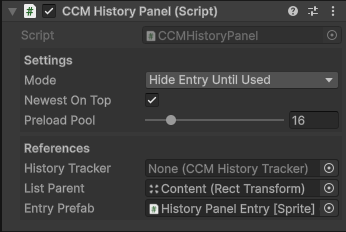

History Panels
A History Panel displays a list of snapshots recorded by the History Tracker.
These snapshots represent previous states of a character, allowing the player to:
- Review past changes
- Restore earlier configurations
Panel Types
There are two primary types of History Panels. Both present the same snapshot data but differ in how that information is displayed.
Text-Based Panels
A Text-Based Panel describes each snapshot using text.
Entry behavior:
- 1 layer changed → Displays the layer name and selected option
- 2 layers changed → Displays both layer names
- 3+ layers changed → Displays the number of layers modified
Typical layout: Vertical list

Sprite-Based Panels
A Sprite-Based Panel visually represents each snapshot using character previews.
Each entry reconstructs the character’s appearance at that point in time by combining layer sprites.
Typical layout: Horizontal list
Preview Frame Setup
To define which frame is used for preview generation:
- Select your Layered Character Type asset
- Open it in the Inspector
- Expand Character Creator Settings
- Locate Character Preview Settings
- Assign a Preview Sprite
The rect of this sprite determines the frame extracted from every layer.
All extracted frames are combined to render the final preview.
Prefabs
Location:
Prefabs > Character Creator > Modules > History > History Panels
Pre-Setup Panels
Located in the Pre-Setup folder.
These panels are ready to use:
- Drag and drop into your Character Creation Menu
- Assign a History Tracker
The History Tracker reference is found on the CCM History Panel component at the root of the prefab.

Entry Prefabs
Located in the History List Entries folder.
Included prefabs:
History Panel Entry [Text]
Displays a textual description of the snapshotHistory Panel Entry [Sprite]
Displays layered sprite previews representing the snapshot
Creating a History Panel
All panels use the CCM History Panel component to populate entries from snapshot data.
Setup Steps
- Create a new GameObject
- Add the
CCM History Panelcomponent - Assign a History Tracker
- Assign a List Parent
- Assign an Entry Prefab
List Parent
The List Parent is the container where entries are instantiated.
Common setup options:
- Vertical Layout Group → Stacked entries
- Horizontal Layout Group → Row-based entries
- Scroll View → Scrollable lists with overflow handling
Panel Settings
| Setting | Description |
|---|---|
| Mode | Controls whether entries appear only when used or are always visible |
| Newest On Top | Inserts new entries at the top of the list |
| Preload Pool | Number of entries pre-instantiated on menu initialization |
Creating a Custom History Entry
To build a custom History Panel Entry:
Step-by-Step
Create a new GameObject
Add the HistoryPanelEntry component
Set the Display Mode:
- Text → Requires a text reference
- Sprite → Requires a sprite container (parent object)
- Text And Sprite → Requires both
Add a
TogglecomponentAssign the
Togglereference inHistoryPanelEntryAdd an
Imagecomponent (background)Set the Toggle Target Graphic to this image
Selection Highlight
- Create a child GameObject (e.g. Highlight)
- Add an
Imagecomponent to it - Assign this image to the Toggle Graphic field
- Configure it as the visual indicator for selection
Finalizing
- Drag the GameObject into the Project window to create a prefab
- Assign it to the Entry Prefab field on the
CCM History Panel
Tip
If setup is unclear, inspect one of the included entry prefabs to understand the structure and references.